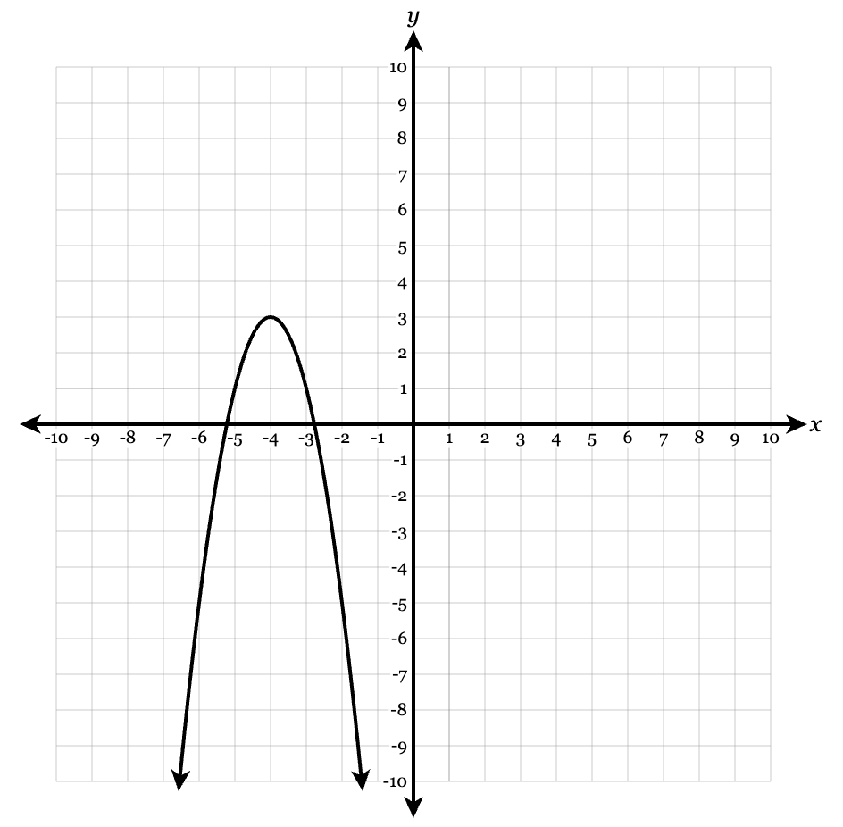

Precalculus Readiness - Unit A: Quadratic Functions
Essential Standard
Students will analyze, solve, graph, rewrite, and model quadratic functions using multiple representations in order to interpret structure, solutions, transformations, rates of change, and key features.
Section A.1: Transformations and Vertex Form of Quadratics
Learning Target: Students will analyze and graph quadratic functions in vertex form using transformations of the parent function.
- I can identify the vertex, axis of symmetry, opening direction, and vertical stretch or compression from vertex form.
- I can graph quadratic functions written in the form \(a(x-h)^2+k\).
- I can describe how changing a, h, and k transforms the graph of \(y=x^2\).
Section A.2: Solving Quadratics by Factoring and Intercepts
Learning Target: Students will solve quadratic equations by factoring and connect solutions to zeros, roots, and x-intercepts.
- I can factor quadratic expressions when the leading coefficient is 1 or greater than 1.
- I can use the zero product property to solve quadratic equations.
- I can connect factored form \(a(x-p)(x-q)\) to the zeros, roots, solutions, and x-intercepts of a quadratic.
Section A.3: Completing the Square, Quadratic Formula, and Discriminant
Learning Target: Students will solve quadratic equations using completing the square and the quadratic formula, using the discriminant to interpret the number and type of solutions.
- I can complete the square to rewrite a quadratic in vertex form or solve a quadratic equation.
- I can calculate the discriminant \(\Delta=b^2-4ac\) and interpret whether a quadratic has two real solutions, one real solution, or no real solutions.
- I can solve quadratic equations using \(x=\frac{-b\pm\sqrt{\Delta}}{2a}\), where \(\Delta=b^2-4ac\).
Section A.4: Writing and Rewriting Quadratic Equations from Graphs, Data, and Features
Learning Target: Students will write and rewrite quadratic equations in standard, vertex, or intercept form using graphs, tables, data, and key features.
- I can write a quadratic equation in vertex form when given the vertex and another point.
- I can write a quadratic equation in intercept form \(a(x-p)(x-q)\) when given zeros and another point.
- I can identify quadratic patterns in tables using first and second differences.
Section A.5: Key Features, Behavior, and Quadratic Modeling
Learning Target: Students will analyze key features and behavior of quadratic functions and interpret them in mathematical or real-world contexts.
- I can identify the vertex, axis of symmetry, intercepts, domain, range, end behavior, maximum/minimum value, and intervals of increase or decrease.
- I can use standard form \(f(x)=ax^2+bx+c\) to identify the y-intercept and determine the axis of symmetry using \(x=-\frac{b}{2a}\).
- I can model and analyze quadratic situations involving area, projectile motion, revenue, or optimization.
Learning Ladder
| Rung | I Can Statement | Math Practice | DOK | Level |
|---|---|---|---|---|
| 8 | I can model and analyze a real-world situation with a quadratic function, choose an appropriate form, justify the model, and interpret solutions, vertex, intercepts, rate of change, and reasonable domain/range in context. | 4. Model with Math / 3. Construct Arguments | DOK 4 | Above |
| 7 | I can compare, defend, and critique multiple strategies for quadratic problems, including factoring, completing the square, quadratic formula, graphing, rewriting forms, and using technology or tables. | 1. Make Sense & Persevere / 3. Construct Arguments | DOK 4 | Above |
| 6 | I can analyze a quadratic function across multiple representations and explain how standard form, vertex form, intercept form, tables, graphs, solutions, and key features are connected. | 7. Look for Structure / 8. Look for Regularity | DOK 3 | Essential |
| 5 | I can determine and justify key features of a quadratic function, including vertex, intercepts, axis of symmetry, maximum/minimum value, range, intervals of increase/decrease, and number/type of solutions. | 2. Reason Abstractly & Quantitatively / 6. Attend to Precision | DOK 3 | Essential |
| 4 | I can solve quadratic equations using factoring, completing the square, or the quadratic formula and interpret the solutions as zeros, roots, or x-intercepts when real solutions exist. | 6. Attend to Precision | DOK 2 | Essential |
| 3 | I can graph, write, and rewrite quadratic functions using vertex form, standard form, intercept form, tables, graphs, or key features. | 5. Use Tools Strategically / 7. Look for Structure | DOK 2 | Essential |
| 2 | I can identify basic features of quadratic functions, including vertex, axis of symmetry, intercepts, opening direction, transformations, domain, and range. | 2. Reason Abstractly | DOK 1 | Essential |
| 1 | I can recognize quadratic functions from equations, graphs, or tables and identify standard form, vertex form, and intercept form. | 1. Make Sense of Problems | DOK 1 | Essential |
Progress Tracking
Not Yet: I need more instruction and practice.
Getting There: I understand most of it but need more practice.
Got It!: I can do this independently.
Teach It!: I can teach it
Format: 3-5 minute warm-up, quick check, or exit ticket
Purpose: Check whether students can recognize quadratic structure, identify basic graph features, use vocabulary accurately, and distinguish between different quadratic forms.
Assessment Ideas
- Quadratic Form Recognition Check Can Be Assessed After Unit 1, Section 1 - Students identify whether equations are written in standard form, vertex form, or intercept form and name what information is visible from each form.
- Basic Feature Identification Check Can Be Assessed After Unit 1, Section 1 - Students identify the vertex, axis of symmetry, opening direction, y-intercept, and x-intercepts from simple graphs or equations.
- Transformation Vocabulary Match Can Be Assessed After Unit 1, Section 1 - Students match equations such as y = (x - 3)^2, y = -x^2, y = 2x^2, and \(y=x^2\) + 5 to transformation descriptions.
- Discriminant Meaning Check Can Be Assessed After Unit 1, Section 3 - Students calculate \(\Delta=b^2-4ac\) for a simple quadratic and state whether the equation has two real solutions, one real solution, or no real solutions.
What this tells the teacher:
Students who struggle here need more direct practice with quadratic vocabulary, equation forms, transformations, and basic graph interpretation before moving into solving, rewriting, or modeling tasks.
Format: Exit ticket, partner check, whiteboard response, or short written explanation
Purpose: Check whether students can apply procedures, choose appropriate forms, solve quadratic equations, graph quadratic functions, and connect algebraic work to graphical meaning.
Assessment Ideas
- Solve by Factoring Task Can Be Assessed After Unit 1, Section 2 - Students factor a quadratic equation, solve using the zero product property, and identify the corresponding zeros, roots, solutions, and x-intercepts.
- Quadratic Formula and Discriminant Task Can Be Assessed After Unit 1, Section 3 - Students calculate \(\Delta=b^2-4ac\), use \(x=\frac{-b\pm\sqrt{\Delta}}{2a}\) to solve, and interpret the number and type of solutions.
- Graph from Vertex or Standard Form Task Can Be Assessed After Unit 1, Section 5 - Students graph a quadratic in vertex form or standard form, identify the vertex, axis of symmetry, intercepts, and range.
- Write or Rewrite an Equation Task Can Be Assessed After Unit 1, Section 4 - Students write a quadratic equation from a vertex and point, from intercepts and a point, or rewrite a quadratic between standard, vertex, and intercept form when possible.
What this tells the teacher:
Students at this level can usually perform procedures, but the assessment reveals whether they understand which form, method, or representation is most useful for the information given.
Format: Constructed response, error analysis, gallery walk, or group explanation
Purpose: Check whether students can reason strategically, justify conclusions, connect representations, explain structure, and interpret solutions and key features.
Assessment Ideas
- Method Selection Justification Can Be Assessed After Unit 1, Section 3 - Students are given several quadratic equations and must choose whether factoring, completing the square, graphing, or the quadratic formula is most efficient. They must justify each choice.
- Multiple Representation Analysis Can Be Assessed After Unit 1, Section 4 - Students analyze a quadratic shown as an equation, graph, and table, then explain how the vertex, intercepts, axis of symmetry, first differences, second differences, and rate of change appear in each representation.
- Error Analysis Response Can Be Assessed After Unit 1, Section 5 - Students critique an incorrect solution involving factoring, completing the square, the quadratic formula, discriminant interpretation, or converting forms, then write a corrected explanation.
- Key Features Explanation Task Can Be Assessed After Unit 1, Section 5 - Students determine maximum/minimum value, range, intervals of increase/decrease, and number/type of solutions, then explain how these features connect to the vertex, the value of a, and the discriminant.
What this tells the teacher:
This level shows whether students understand the mathematics behind the procedures. These tasks are useful for deciding who is ready for modeling and who needs reteaching on structure, notation, solving methods, or representation connections.
Format: Performance task, extended response, modeling task, or strategy defense
Purpose: Check whether students can synthesize solving, graphing, equation writing, rewriting forms, and interpretation to model and analyze unfamiliar quadratic situations.
Assessment Ideas
- Quadratic Modeling Task Can Be Assessed After Unit 1, Section 5 - Students model a real-world situation such as projectile motion, area, revenue, or optimization using a quadratic function. They must write a model, interpret the vertex and intercepts, determine reasonable domain/range, and evaluate reasonableness.
- Choose-the-Best-Form Task Can Be Assessed After Unit 1, Section 5 - Students receive multiple pieces of information such as a graph, intercepts, vertex, and data points. They must choose vertex form, intercept form, or standard form, write the equation, and defend why that form was efficient.
- Strategy Defense Task Can Be Assessed After Unit 1, Section 5 - Students solve a quadratic equation using two different methods, compare the methods, and defend which method is more reliable or efficient for that equation.
- Critique and Redesign Task Can Be Assessed After Unit 1, Section 5 - Students evaluate a flawed quadratic model or solution strategy, identify what is wrong, revise it, and explain why the corrected version better represents the situation.
What this tells the teacher:
DOK 4 tasks show whether students can transfer quadratic understanding to unfamiliar situations and justify decisions. These are best used as short performance checks, modeling extensions, or summative-level tasks.
Assessment is designed for a 45-minute time limit.
5 Questions DoK 1 - Recognizing quadratic forms, identifying basic graph features, interpreting transformations, using standard form features, and calculating/interpreting discriminant.
4 Questions DoK 2 - Solving by factoring, solving with quadratic formula or completing the square, graphing from vertex or standard form, writing or rewriting equations from features.
2 Questions DoK 3 - Explaining key features, choosing and justifying solution methods, interpreting discriminant and non-real solutions, connecting equation form to graph/table behavior.
1 Question DoK 4 - Multi-step modeling, strategy defense, or critique task involving quadratic functions, solutions, equation forms, reasonable domain/range, and interpretation.
A — Highly Proficient
The student demonstrates a strong and flexible understanding of Unit A concepts. Work is accurate, well-organized, and supported by clear reasoning. The student can solve, graph, transform, write, and rewrite quadratic functions using multiple forms and can interpret vertex, intercepts, discriminant, maximum/minimum values, intervals of increase/decrease, rate of change, and reasonable domain/range in context. The student can justify method choices and connect algebraic, graphical, tabular, and verbal representations.
B — Proficient
The student demonstrates solid understanding of the essential Unit A concepts. Most work is accurate, and the student can complete standard and moderately complex tasks independently. The student can solve quadratic equations, graph quadratic functions, identify key features, write or rewrite equations from common information, and interpret the discriminant. Explanations are generally clear, though they may lack some precision or depth. Errors are minor or isolated and do not show major misconceptions.
C — Developing Proficiency
The student demonstrates partial but passable understanding of Unit A concepts. The student can complete many routine tasks but may need support with multi-step solving, converting forms, choosing efficient methods, connecting representations, or interpreting features in context. Work may contain errors, incomplete explanations, or inconsistent notation, but there is enough evidence that the student understands the main ideas.
Not Yet — Insufficient Evidence
The student does not yet demonstrate sufficient understanding of the essential Unit A concepts. Work shows major errors, missing reasoning, incorrect use of quadratic forms, confusion between vertex and intercepts, difficulty solving equations, incorrect discriminant interpretation, or weak connections between equations, graphs, and tables. The student may need reteaching, additional practice, or reassessment to demonstrate proficiency.
Strictly Assessment Bank
This bank is organized by DoK so future formative versions and summative versions can be assembled quickly. Source IDs are preserved for internal tracking, but they can be removed from student-facing assessments.
Figure naming convention for future assessment files: use ua-dok#-#-problem#.png, such as ua-dok1-1-3.png, and ua-sum-12.png for summative problem 12.
Performance Task Structure
- Launch information: Give students a context, graph, table, zeros, vertex, or partial model.
- Model selection: Students choose standard, vertex, or intercept form and explain why that form is efficient.
- Model construction: Students write or revise a quadratic model using the given information.
- Feature interpretation: Students interpret vertex, intercepts, domain, range, increasing/decreasing behavior, and maximum/minimum value in context.
- Reasonableness check: Students critique whether the model and solution make sense for the situation.
- Communication: Students defend strategy choices and show connections among equation, graph, table, and context.
Recommended DOK 4 Task Families
Projectile Motion
Use height/time context. Require maximum height, landing time, reasonable time domain, and interpretation of non-reasonable values.
Area or Fencing Optimization
Use dimensions and constraints. Require students to define variables, build area function, maximize area, and justify the domain.
Revenue or Profit
Use price/revenue/profit context. Require maximum revenue, break-even points, realistic restrictions, and critique of y-intercept meaning.
Critique and Redesign
Give a flawed model or flawed solution. Students identify the error, revise the model, and defend why the revision better fits the situation.
Identify the vertex of each quadratic.
\(y=(x-3)^2+5\)
\(y=(x+4)^2-2\)
\(y=-2(x-1)^2+7\)
For each function, state whether the parabola opens up or down.
\(y=3(x-2)^2+1\)
\(y=-\frac12(x+5)^2-4\)
\(y=(x+1)^2\)
\(y=-4x^2+6\)
State the axis of symmetry of each quadratic.
\(y=(x-6)^2-1\)
\(y=2(x+3)^2+4\)
\(y=-5(x-9)^2\)
Identify the values of \(a\), \(h\), and \(k\) for each function written in the form \(y=a(x-h)^2+k\).
\(y=4(x-2)^2+7\)
\(y=-3(x+5)^2-1\)
\(y=\frac12(x-8)^2\)
Match each function to its transformation from \(y=x^2\).
\(y=(x-4)^2\)
\(y=x^2+6\)
\(y=-x^2\)
\(y=3x^2\)
Transformations:
reflection over the \(x\)-axis
shift right 4
vertical stretch by a factor of 3
shift up 6
Use the graph to identify the basic features of the quadratic function.

Does the parabola open up or down?
Identify the vertex.
State the axis of symmetry.
State whether the vertex is a maximum or minimum.
State the range shown by the graph.
For each function, identify the vertex and whether the vertex represents a maximum or minimum.
\(y=(x+2)^2-9\)
\(y=-3(x-1)^2+8\)
\(y=\frac12(x-5)^2+4\)
Fill in the blanks.
For \(y=2(x-7)^2-3\), the graph is shifted ______ units right, ______ units down, stretched by a factor of ______, and opens ______.
Which equation has vertex \((-4,6)\)? Explain how you know.
\(y=(x-4)^2+6\)
\(y=(x+4)^2+6\)
\(y=(x+6)^2-4\)
\(y=(x-6)^2-4\)
Which equation represents a parabola with axis of symmetry \(x=3\)?
\(y=(x+3)^2-1\)
\(y=(x-3)^2+2\)
\(y=3(x+1)^2\)
\(y=x^2-3\)
Describe the transformation from \(y=x^2\) to \(y=-(x+1)^2+4\). Use the words shift, reflect, and vertex in your answer.
A quadratic function has vertex \((2,-5)\), opens upward, and has no vertical stretch or compression. Write its equation in vertex form.
Factor each expression completely.
\(x^2+7x+12\)
\(x^2-9x+20\)
\(x^2+x-30\)
\(x^2-16\)
Factor each expression completely.
\(x^2-11x+24\)
\(x^2+3x-28\)
\(x^2-25\)
\(x^2+10x+25\)
Factor out the greatest common factor.
\(6x^2+18x\)
\(-4x^2+20x\)
\(3x^3-12x^2\)
\(5x^2y-15xy\)
Identify which factoring pattern could be used.
\(x^2-49\)
\(x^2+14x+49\)
\(x^2-8x+15\)
\(4x^2-25\)
Choices:
difference of squares
perfect square trinomial
trinomial factoring
For each equation, identify the zeros without multiplying.
\(y=(x-3)(x+5)\)
\(y=2(x+1)(x-7)\)
\(y=-4(x-6)(x+2)\)
\(y=(x-9)^2\)
For each function, state the \(x\)-intercepts.
\(f(x)=(x-4)(x+2)\)
\(g(x)=3(x-1)(x-8)\)
\(h(x)=-2(x+6)(x-3)\)
Match each equation to its solutions.
\((x-2)(x+7)=0\)
\(x(x-5)=0\)
\((3x+1)(x-4)=0\)
\((x+6)^2=0\)
Solutions:
\(x=0,5\)
\(x=2,-7\)
\(x=-6\)
\(x=-\frac13,4\)
Fill in the blanks.
If \(f(x)=2(x-5)(x+3)\), then the zeros are ______ and ______, and the \(x\)-intercepts are ______ and ______.
Which equation has zeros \(x=-2\) and \(x=6\)?
\(y=(x-2)(x+6)\)
\(y=(x+2)(x-6)\)
\(y=(x-6)(x-2)\)
\(y=(x+6)(x-2)\)
Explain how you know.
Which expression is equivalent to \(x^2-5x-24\)?
\((x-8)(x+3)\)
\((x+8)(x-3)\)
\((x-6)(x+4)\)
\((x+6)(x-4)\)
State whether each expression is factorable over the integers.
\(x^2+5x+6\)
\(x^2+5x+7\)
\(x^2-2x-35\)
\(x^2+4x+4\)
A student says the roots, zeros, solutions, and \(x\)-intercepts always mean exactly the same thing.
What is correct about this statement? What needs to be clarified?
For each quadratic equation, identify \(a\), \(b\), and \(c\).
\(x^2+5x+6=0\)
\(2x^2-7x+3=0\)
\(-3x^2+4x-9=0\)
\(x^2-16=0\)
Calculate the discriminant \(\Delta=b^2-4ac\) for each equation.
\(x^2-6x+8=0\)
\(x^2+4x+4=0\)
\(x^2+2x+5=0\)
For each value of \(\Delta\), state the number of real solutions.
\(\Delta=25\)
\(\Delta=0\)
\(\Delta=-12\)
\(\Delta=3\)
Fill in the blanks.
If \(\Delta>0\), the quadratic equation has ______ real solution(s).
If \(\Delta=0\), the quadratic equation has ______ real solution(s).
If \(\Delta<0\), the quadratic equation has ______ real solution(s).
Which equation has exactly one real solution?
\(x^2-10x+25=0\)
\(x^2-10x+21=0\)
\(x^2-10x+30=0\)
\(x^2+10x+21=0\)
Explain how you know.
Which equation has no real solutions?
\(x^2+6x+9=0\)
\(x^2+6x+5=0\)
\(x^2+6x+10=0\)
\(x^2-6x+5=0\)
Explain how you know.
For each equation, decide whether the solutions are rational, irrational, or non-real.
\(x^2-8x+12=0\)
\(x^2-8x+10=0\)
\(x^2-8x+20=0\)
Match each equation to the description of its graph.
\(y=x^2-4x+4\)
\(y=x^2-4x+1\)
\(y=x^2-4x+9\)
Descriptions:
crosses the \(x\)-axis twice
touches the \(x\)-axis once
does not touch the \(x\)-axis
For each expression, state what number must be added to complete the square.
\(x^2+10x\)
\(x^2-14x\)
\(x^2+3x\)
\(x^2-\frac{2}{3}x\)
Use the graph to identify the form that would be most efficient for writing the quadratic equation.

Which feature is easiest to read from the graph: vertex, zeros, or y-intercept?
Which equation form would be most efficient to start with: standard form, vertex form, or intercept form?
Explain your choice in one sentence.
Which expression is equivalent to:
\[x^2-6x+9\]
\((x-3)^2\)
\((x+3)^2\)
\((x-6)^2\)
\((x-9)^2\)
A student says:
“The discriminant tells me the solutions without solving.”
What is correct about this statement? What needs to be clarified?
Identify the form of each quadratic equation: standard form, vertex form, or intercept form.
\(y=2x^2-5x+3\)
\(y=-3(x-4)^2+7\)
\(y=(x+2)(x-6)\)
\(y=-\frac12(x-1)(x+5)\)
For each equation, identify the information that is easiest to see.
\(y=4(x-3)^2-8\)
\(y=-2(x+1)(x-7)\)
\(y=x^2+6x+5\)
Choose from:
1. vertex
2. zeros
3. \(y\)-intercept and leading coefficient
State the vertex from each equation.
\(y=(x-5)^2+2\)
\(y=-4(x+3)^2-1\)
\(y=\frac12(x-8)^2\)
State the zeros from each equation.
\(y=(x-2)(x+9)\)
\(y=-3(x+4)(x-6)\)
\(y=5(x-1)^2\)
State the \(y\)-intercept of each function.
\(y=x^2-7x+10\)
\(y=3x^2+2x-8\)
\(y=-5x^2+4\)
For each table, determine whether the relationship appears linear, quadratic, or neither.
\[
\begin{array}{c|ccccc}
x&0&1&2&3&4\\
\hline
y&1&4&7&10&13
\end{array}
\]
\[
\begin{array}{c|ccccc}
x&0&1&2&3&4\\
\hline
y&2&5&10&17&26
\end{array}
\]
\[
\begin{array}{c|ccccc}
x&0&1&2&3&4\\
\hline
y&1&2&4&8&16
\end{array}
\]
Find the first differences and second differences for the table. \[ \begin{array}{c|ccccc} x&0&1&2&3&4\\ \hline y&3&6&11&18&27 \end{array} \] Then state whether the table could represent a quadratic function.
Fill in the blanks.
A quadratic table with equally spaced \(x\)-values has constant ______ differences.
The form \(a(x-h)^2+k\) is called ______ form.
The form \(a(x-p)(x-q)\) is called ______ form.
The form \(ax^2+bx+c\) is called ______ form.
Which equation has zeros \(-4\) and \(6\)?
\(y=(x-4)(x+6)\)
\(y=(x+4)(x-6)\)
\(y=(x-6)(x-4)\)
\(y=(x+6)(x-4)\)
Explain how you know.
Which equation has vertex \((3,-7)\)?
\(y=(x+3)^2-7\)
\(y=(x-3)^2-7\)
\(y=(x-7)^2+3\)
\(y=(x+7)^2-3\)
A quadratic function has zeros \(x=2\) and \(x=10\).
What is the axis of symmetry?
Explain how you know without graphing.
A quadratic table has constant second difference \(6\). What is the value of \(a\) if the \(x\)-values increase by \(1\)?
Explain your reasoning.
For each function, identify the \(y\)-intercept.
\(f(x)=x^2-4x+7\)
\(g(x)=-2x^2+5x-3\)
\(h(x)=\frac12x^2+6\)
For each quadratic, state whether the graph opens up or down.
\(y=3x^2-5x+1\)
\(y=-x^2+8x-12\)
\(y=-\frac14x^2+2x+9\)
\(y=0.8x^2-3x\)
For each quadratic, determine whether the vertex is a maximum or a minimum.
\(y=x^2+6x+2\)
\(y=-2x^2+4x+5\)
\(y=5(x-3)^2-8\)
\(y=-\frac12(x+1)^2+7\)
Use the equation to identify the axis of symmetry.
\(y=(x-4)^2+9\)
\(y=-3(x+2)^2-1\)
\(y=2(x-7)^2\)
Use the formula
\(x=-\frac{b}{2a}\)
to find the axis of symmetry for each quadratic.
\(y=x^2-8x+3\)
\(y=2x^2+12x-1\)
\(y=-x^2+10x+4\)
For each function, identify the domain.
\(y=x^2-5x+6\)
\(y=-2(x-1)^2+4\)
\(y=0.5x^2+7x-2\)
Match each description to the correct range.
A parabola opens up and has vertex \((3,-4)\).
A parabola opens down and has vertex \((-2,7)\).
A parabola opens up and has vertex \((0,5)\).
A parabola opens down and has vertex \((6,-1)\).
Ranges:
\(y\le 7\)
\(y\ge -4\)
\(y\le -1\)
\(y\ge 5\)
Fill in the blanks.
For a quadratic function that opens upward, the vertex represents a ______ value.
For a quadratic function that opens downward, the vertex represents a ______ value.
The graph of every quadratic function has a vertical line of symmetry called the ______.
Which function has a maximum value?
\(y=2x^2+3x-1\)
\(y=-x^2+6x+4\)
\(y=5(x-2)^2-8\)
\(y=\frac13x^2-7\)
Explain how you know.
Which function has a minimum value of \(-6\)?
\(y=(x+4)^2-6\)
\(y=-(x+4)^2-6\)
\(y=(x-6)^2+4\)
\(y=-6(x+4)^2\)
A quadratic function has vertex \((5,12)\) and opens downward.
What is the maximum value?
What is the axis of symmetry?
What is the range?
A quadratic function has vertex \((-3,-8)\) and opens upward.
What is the minimum value?
What is the axis of symmetry?
What is the range?
Graph \(y=(x-2)^2+1\). Then identify:
vertex
axis of symmetry
domain
range
minimum value
Figure reference if selected for an assessment: figures/UAS1-013_grid.png
Graph \(y=-2(x+1)^2+3\). Then identify:
vertex
axis of symmetry
domain
range
maximum value
Figure reference if selected for an assessment: figures/UAS1-014_grid.png
The graph is intended to show a quadratic with vertex \((2,-1)\) and x-intercepts \((1,0)\) and \((3,0)\).

Write the equation in vertex form.
Write the equation in intercept form.
Use one point from the graph to verify that both forms represent the same function.
Complete the table for \(y=-\frac12(x+2)^2+4\). Then identify the maximum value.
| \(x\) | -4 | -3 | -2 | -1 | 0 |
|---|---|---|---|---|---|
| \(y\) |
Graph both functions on the same coordinate grid.
\[f(x)=x^2\]
\[g(x)=(x-4)^2-3\]
Then describe how the graph of \(g(x)\) compares to the graph of \(f(x)\).
Figure reference if selected for an assessment: figures/UAS1-017_grid.png
Graph both functions on the same coordinate grid.
\[f(x)=x^2\]
\[g(x)=-2x^2+1\]
Then describe the effect of the negative sign, the coefficient \(2\), and the \(+1\).
Figure reference if selected for an assessment: figures/UAS1-018_grid.png
Write a quadratic equation in vertex form with:
vertex \((5,-2)\)
opens downward
vertical stretch factor \(3\)
Write a quadratic equation in vertex form with:
vertex \((-1,4)\)
opens upward
vertical compression factor \(\frac12\)
A parabola has vertex \((3,7)\) and passes through the point \((5,15)\). Write the equation in vertex form.
A parabola has vertex \((-2,-6)\) and passes through the point \((0,2)\). Write the equation in vertex form.
A quadratic function is written as \(f(x)=a(x-h)^2+k\). If the vertex is \((4,-1)\) and the graph passes through \((6,11)\), determine \(a\) and write the function.
A quadratic function has vertex \((-3,5)\) and passes through the point \((-1,-7)\).
Determine \(a\).
Write the equation in vertex form.
State whether the vertex is a maximum or minimum.
A parabola has vertex \((2,3)\). One point on the graph is \((4,-5)\). A student writes \(y=2(x-2)^2+3\). Is the student correct? Explain and correct the equation if needed.
The graph of a quadratic function has vertex \((-4,1)\) and opens downward. Which of the following could be its equation? Explain your choice.
\(y=2(x+4)^2+1\)
\(y=-2(x+4)^2+1\)
\(y=-2(x-4)^2+1\)
\(y=2(x-1)^2-4\)
A quadratic function has vertex \((1,-3)\) and \(a=-4\).
Write the equation.
Find \(f(0)\).
Find \(f(2)\).
Explain why the answers to parts b and c are related.
For the function \(f(x)=3(x+2)^2-12\), find:
\(f(-2)\)
\(f(0)\)
\(f(-4)\)
Explain the symmetry shown in your answers.
A quadratic function has vertex \((6,-8)\). The graph passes through \((4,0)\).
Write the function in vertex form.
Find another point on the graph using symmetry.
Explain how the axis of symmetry helped.
A football is kicked and its height can be modeled by \(h(t)=-2(t-3)^2+20\), where \(t\) is time in seconds and \(h(t)\) is height in feet.
What is the maximum height?
When does the maximum height occur?
What does the vertex mean in this situation?
The graph is intended to show a quadratic with x-intercepts \((-4,0)\) and \((-2,0)\), and vertex \((-3,-2)\).

Write the equation in intercept form.
Determine the value of \(a\).
Rewrite the equation in vertex form.
Explain how the graph helped you choose a starting form.
Solve by factoring.
\(x^2-12x+35=0\)
\(x^2+2x-48=0\)
\(x^2+16x+64=0\)
Solve each equation by first factoring out the GCF.
\(3x^2-15x=0\)
\(2x^2+14x=0\)
\(-5x^2+45x=0\)
Solve each equation.
\(x^2=7x\)
\(x^2+4x=0\)
\(2x^2=18x\)
\(5x^2-20x=0\)
Solve by factoring.
\(2x^2+7x+3=0\)
\(3x^2-10x+8=0\)
\(4x^2-12x+9=0\)
Solve by factoring.
\(6x^2+x-2=0\)
\(5x^2+11x+2=0\)
\(8x^2-10x+3=0\)
Solve each equation. Show your factoring.
\(4x^2-25=0\)
\(9x^2-16=0\)
\(25x^2-1=0\)
Solve each equation.
\((x-4)(x+9)=0\)
\(2(x+5)(x-1)=0\)
\(-3(x-7)(x+2)=0\)
\((x+8)^2=0\)
A quadratic function is written in factored form:
\(f(x)=-2(x-3)(x+4)\)
State the zeros.
State the \(x\)-intercepts.
Find \(f(0)\).
Explain what the coefficient \(-2\) changes and what it does not change.
For the function:
\(g(x)=3(x+1)(x-5)\)
Identify the zeros.
Find the \(y\)-intercept.
State the axis of symmetry.
Explain how the zeros help you find the axis of symmetry.
Write a quadratic function in factored form with zeros \(-6\) and \(2\), and \(a=1\).
Then rewrite it in standard form.
Write a quadratic function in factored form with zeros \(3\) and \(8\), and \(a=-2\).
Then find the \(y\)-intercept.
A parabola has \(x\)-intercepts at \((-4,0)\) and \((7,0)\).
Write an equation in factored form using \(a=1\).
Find the axis of symmetry.
Find the vertex.
State whether the vertex is a maximum or minimum.
Figure reference if selected for an assessment: figures/UAS2-025_grid.png
A parabola has \(x\)-intercepts at \((1,0)\) and \((5,0)\), and passes through \((0,-10)\).
Write the equation in factored form.
Determine the value of \(a\).
Find the vertex.
State whether the graph opens up or down.
Figure reference if selected for an assessment: figures/UAS2-026_grid.png
The graph of a quadratic has zeros \(x=-3\) and \(x=4\), and the point \((1,-16)\) is on the graph.
Write the equation in factored form.
Find the \(y\)-intercept.
Explain how the zeros and point determine the equation.
Figure reference if selected for an assessment: figures/UAS2-027_grid.png
Solve and interpret.
\(h(t)=-4(t-1)(t-6)\)
where \(h(t)\) is height in feet and \(t\) is time in seconds.
When is the height \(0\)?
What do these values mean in context?
What is the axis of symmetry?
At what time does the maximum height occur?
Figure reference if selected for an assessment: figures/UAS2-028_grid.png
A quadratic function has factored form:
\(f(x)=2(x+2)(x-6)\)
Complete the table.
| \(x\) | \(-2\) | \(0\) | \(2\) | \(4\) | \(6\) |
|---|---|---|---|---|---|
| \(f(x)\) |
Then explain how the table shows the zeros.
Figure reference if selected for an assessment: figures/UAS2-029_grid.png
A student solves:
\(x^2-9x=0\)
by dividing both sides by \(x\), getting:
\(x=9\)
Is the student’s solution complete? Explain and solve correctly.
Solve by completing the square.
\[x^2+8x+7=0\]
Solve by completing the square.
\[x^2-10x+6=0\]
Solve by completing the square.
\[x^2+6x-2=0\]
Solve by completing the square.
\[x^2-4x-11=0\]
Rewrite each quadratic in vertex form by completing the square.
\(y=x^2+6x+2\)
\(y=x^2-8x+5\)
\(y=x^2+10x-7\)
Rewrite in vertex form by completing the square.
\[y=2x^2+12x+7\]
Then identify the vertex.
Rewrite in vertex form by completing the square.
\[y=-3x^2+18x-5\]
Then identify the vertex and state whether it is a maximum or minimum.
Solve using the quadratic formula.
\[x^2-7x+10=0\]
Then explain why the result matches what factoring would give.
Solve using the quadratic formula.
\[2x^2-5x-3=0\]
Solve using the quadratic formula.
\[3x^2+4x-2=0\]
Give exact answers.
Use the graph to analyze the key features of the quadratic function.

Estimate the vertex.
Estimate the x-intercepts.
State the axis of symmetry.
State the interval where the function is increasing and the interval where it is decreasing.
Write a possible equation for the graph in vertex form or intercept form.
Solve using the quadratic formula.
\[4x^2+4x+5=0\]
Then explain why the graph has no \(x\)-intercepts.
Solve using the quadratic formula.
\[2x^2+3x+7=0\]
Give exact non-real solutions.
For each equation:
calculate \(\Delta\)
predict the number of real solutions
solve if real solutions exist
\(x^2-12x+36=0\)
\(x^2-12x+20=0\)
\(x^2-12x+40=0\)
Solve each equation. Choose either completing the square or the quadratic formula.
\(x^2+2x-15=0\)
\(x^2+2x-7=0\)
\(x^2+2x+10=0\)
Explain why your chosen method made sense.
Solve for \(x\).
\[(2x-3)^2+6(2x-3)+5=0\]
Hint: Let \(u=2x-3\), or solve directly.
Solve for \(x\).
\[(x+4)^2-10(x+4)+21=0\]
Explain how substitution can make the equation easier.
Solve for \(x\).
\[x-6\sqrt{x}+8=0\]
Hint: Let \(u=\sqrt{x}\). Check your solutions.
Write a quadratic equation in vertex form with vertex \((4,-3)\) and \(a=2\).
Write a quadratic equation in vertex form with vertex \((-5,6)\) and \(a=-1\).
Write a quadratic equation in intercept form with zeros \(x=-2\) and \(x=7\), and \(a=1\).
Write a quadratic equation in intercept form with zeros \(x=3\) and \(x=9\), and \(a=-2\).
A quadratic has vertex \((2,5)\) and passes through \((4,13)\).
Write the equation in vertex form.
Verify using the point \((4,13)\).
A quadratic has vertex \((-1,-6)\) and passes through \((1,2)\).
Write the equation in vertex form.
State whether the graph opens up or down.
A quadratic has vertex \((3,8)\) and passes through \((5,0)\).
Write the equation in vertex form.
Find another point on the graph using symmetry.
A quadratic has zeros \(-3\) and \(5\), and passes through \((1,-16)\).
Write the equation in intercept form.
Find the \(y\)-intercept.
A quadratic has zeros \(2\) and \(8\), and passes through \((0,32)\).
Write the equation in intercept form.
Find the axis of symmetry.
Find the vertex.
A quadratic has \(x\)-intercepts at \((-4,0)\) and \((6,0)\), and passes through \((0,-24)\).
Write the equation in intercept form.
Rewrite the equation in standard form.
Rewrite each equation in standard form.
\(y=2(x-3)^2+5\)
\(y=-(x+4)^2+1\)
\(y=\frac12(x-6)^2-8\)
Rewrite each equation in standard form.
\(y=(x-2)(x+5)\)
\(y=-3(x+1)(x-4)\)
\(y=2(x-6)^2\)
Rewrite the quadratic in vertex form by completing the square. \[ y=x^2-10x+18 \] Then identify the vertex.
Rewrite the quadratic in vertex form by completing the square. \[ y=2x^2+8x-1 \] Then identify the vertex.
The table shows a quadratic function. \[ \begin{array}{c|ccccc} x&0&1&2&3&4\\ \hline y&5&8&13&20&29 \end{array} \]
Find the first differences.
Find the second differences.
Determine the value of \(a\).
Write an equation for the function.
The table shows a quadratic function. \[ \begin{array}{c|ccccc} x&-2&-1&0&1&2\\ \hline y&11&2&-3&-4&-1 \end{array} \]
Find the second differences.
Determine \(a\).
Use \(y=ax^2+bx+c\) to write the equation.
The table shows a quadratic function. \[ \begin{array}{c|ccccc} x&1&2&3&4&5\\ \hline y&0&-3&-4&-3&0 \end{array} \]
Identify the zeros.
Write the equation in intercept form.
Verify using the vertex.
A quadratic function has the table: \[ \begin{array}{c|ccccc} x&-1&0&1&2&3\\ \hline y&12&5&0&-3&-4 \end{array} \]
Use differences to determine whether the table is quadratic.
Find an equation in standard form.
Use the equation to predict \(f(4)\).
For the function
\(f(x)=x^2-6x+5\)
find:
the \(y\)-intercept
the axis of symmetry
the vertex
whether the vertex is a maximum or minimum
the range
For the function
\(g(x)=-x^2+8x-10\)
find:
the \(y\)-intercept
the axis of symmetry
the vertex
whether the vertex is a maximum or minimum
the range
For the function
\(h(x)=2x^2+4x-7\)
find:
the axis of symmetry
the vertex
the \(y\)-intercept
the domain
the range
For the function
\(p(x)=-3x^2+12x+1\)
find:
the axis of symmetry
the vertex
the maximum value
the \(y\)-intercept
the range
Graph the function
\(y=x^2-4x-5\)
Then identify:
vertex
axis of symmetry
\(x\)-intercepts
\(y\)-intercept
range
Figure reference if selected for an assessment: figures/UAS5-017_grid.png
Graph the function
\(y=-x^2+2x+8\)
Then identify:
vertex
axis of symmetry
\(x\)-intercepts
\(y\)-intercept
range
Figure reference if selected for an assessment: figures/UAS5-018_grid.png
For the function
\(f(x)=x^2-2x-8\)
Find the vertex.
Find the \(x\)-intercepts.
Find the \(y\)-intercept.
State the intervals where the function is increasing and decreasing.
For the function
\(g(x)=-x^2-4x+12\)
Find the vertex.
Find the \(x\)-intercepts.
Find the \(y\)-intercept.
State the intervals where the function is increasing and decreasing.
Complete the table for
\(f(x)=x^2-6x+8\)
| \(x\) | 1 | 2 | 3 | 4 | 5 |
|---|---|---|---|---|---|
| \(f(x)\) |
Then identify the vertex and axis of symmetry.
Complete the table for
\(g(x)=-2x^2+8x-3\)
| \(x\) | 0 | 1 | 2 | 3 | 4 |
|---|---|---|---|---|---|
| \(g(x)\) |
Then identify the maximum value.
A quadratic function has zeros \(x=-2\) and \(x=6\).
Find the axis of symmetry.
Explain how the zeros determine the axis of symmetry.
If the graph opens upward, where is the function decreasing?
If the graph opens upward, where is the function increasing?
A quadratic function has zeros \(x=1\) and \(x=9\).
Find the axis of symmetry.
If the graph opens downward, where is the function increasing?
If the graph opens downward, where is the function decreasing?
What kind of value does the vertex represent?
The height of a ball is modeled by
\(h(t)=-16t^2+64t+5\)
where \(t\) is time in seconds and \(h(t)\) is height in feet.
Find the time when the ball reaches its maximum height.
Find the maximum height.
What is the initial height?
Explain what the vertex means in context.
A company’s revenue is modeled by
\(R(p)=-5p^2+120p\)
where \(p\) is the price in dollars.
Find the price that maximizes revenue.
Find the maximum revenue.
Find the revenue when \(p=0\).
Explain why the revenue cannot increase forever.
A rectangle has perimeter \(40\) units. Let \(x\) represent the width.
Write an expression for the length in terms of \(x\).
Write an area function \(A(x)\).
Determine the value of \(x\) that gives the maximum area.
Find the maximum area.
A farmer has \(60\) feet of fencing to make a rectangular pen along a barn, so only three sides need fencing. Let \(x\) represent each side perpendicular to the barn.
Write an expression for the side parallel to the barn.
Write an area function \(A(x)\).
Find the value of \(x\) that maximizes area.
Find the maximum area.
A quadratic model is given by
\(P(x)=-2x^2+20x-18\)
where \(P(x)\) is profit in hundreds of dollars.
Find the break-even points.
Find the value of \(x\) that maximizes profit.
Find the maximum profit.
Explain what the zeros mean in context.
For the function
\(f(x)=3x^2-18x+20\)
Find the vertex using \(x=-\frac{b}{2a}\).
Rewrite the function in vertex form.
State the minimum value.
Explain how standard form and vertex form each reveal different information.
A student says, “The graph of \(y=(x+5)^2-2\) shifts right 5 and down 2.” Explain the student’s mistake. Then describe the correct transformation.
A student says, “The graph of \(y=-\frac12(x-3)^2+4\) is narrower than \(y=x^2\) because there is a fraction.” Is the student correct? Explain.
Compare the graphs \(f(x)=2(x-1)^2+3\) and \(g(x)=-2(x-1)^2+3\). Explain what is the same and what is different about their vertices, axes of symmetry, widths, opening directions, domains, and ranges.
Compare the graphs \(f(x)=(x-4)^2-2\) and \(g(x)=(x+4)^2-2\). Explain how the equations show that the graphs have the same shape but different locations.
Two quadratic functions have the same vertex \((2,-1)\). One has \(a=3\), and the other has \(a=\frac13\). Explain how their graphs are different and how their equations reveal the difference.
A parabola has vertex \((1,6)\) and passes through \((3,-2)\). A student reasons \(y=a(x+1)^2+6\), then uses \((3,-2)\) to find \(a=-\frac12\). Identify the error and solve correctly.
A graph has a minimum at \((-2,5)\) and passes through \((0,17)\).
Write the equation in vertex form.
Explain why the vertex must be a minimum.
Use symmetry to identify another point on the graph.
A graph has a maximum at \((4,9)\) and passes through \((1,0)\).
Write the equation in vertex form.
Explain why the graph opens downward.
State the axis of symmetry and range.
The table shows values of a quadratic function.
| \(x\) | -1 | 0 | 1 | 2 | 3 |
|---|---|---|---|---|---|
| \(y\) | 8 | 3 | 0 | -1 | 0 |
Identify the vertex.
State the axis of symmetry.
Write an equation in vertex form.
Explain how the table shows symmetry.
The graph is intended to show a quadratic with vertex \((6,4)\) and x-intercepts \((5,0)\) and \((7,0)\).

Write the equation in vertex form.
Write the equation in intercept form.
Explain why the value of \(a\) is different from the basic parent-function width.
Explain what each form reveals more clearly.
A quadratic model is given by \(P(x)=-4(x-6)^2+100\), where \(P(x)\) represents profit in dollars and \(x\) represents price in dollars.
What price gives the maximum profit?
What is the maximum profit?
Explain why increasing or decreasing the price from \(6\) lowers the profit.
A student graphs \(y=2(x-3)^2-4\) by first shifting \(y=x^2\) right 3, then down 4, then stretching vertically by 2. Another student says the graph should be stretched first, then shifted. Do the two students get the same graph? Explain carefully.
A student factors:
\(x^2+2x-24\)
as:
\((x+6)(x-4)\)
Then solves:
\(x=-6,\quad x=4\)
Is the student correct? Explain how you can check without expanding everything.
A student solves:
\(2x^2+8x=0\)
by writing:
\(2x(x+8)=0\)
then says:
\(x=0,\quad x=-8\)
Identify the error and solve correctly.
A student says:
“The graph of \(y=(x-2)(x+6)\) has \(x\)-intercepts at \(2\) and \(6\).”
Explain the mistake. Then state the correct \(x\)-intercepts.
Compare the two functions.
\(f(x)=(x-3)(x+1)\)
\(g(x)=2(x-3)(x+1)\)
What features are the same?
What features are different?
Explain why multiplying by \(2\) does not change the zeros.
Compare the two functions.
\(f(x)=(x-5)(x+2)\)
\(g(x)=-(x-5)(x+2)\)
What are the zeros of each function?
How are the graphs related?
How does the negative sign affect the vertex?
A quadratic has zeros \(-1\) and \(7\).
Write two different equations with these same zeros.
Explain how the graphs can have the same zeros but different shapes.
Describe what changes when \(a\) changes.
The table shows values of a quadratic function.
| \(x\) | \(-3\) | \(-1\) | \(1\) | \(3\) | \(5\) |
|---|---|---|---|---|---|
| \(f(x)\) | \(0\) | \(-8\) | \(-12\) | \(-8\) | \(0\) |
Identify the zeros.
State the axis of symmetry.
Write an equation in factored form.
Explain how the table shows symmetry.
Figure reference if selected for an assessment: figures/UAS2-037_grid.png
The table shows values of a quadratic function.
| \(x\) | \(-4\) | \(-2\) | \(0\) | \(2\) | \(4\) |
|---|---|---|---|---|---|
| \(f(x)\) | \(-24\) | \(0\) | \(8\) | \(0\) | \(-24\) |
Identify the zeros.
Determine whether the vertex is a maximum or minimum.
Write an equation in factored form.
Explain why the graph opens downward.
Figure reference if selected for an assessment: figures/UAS2-038_grid.png
A graph has \(x\)-intercepts at \((-2,0)\) and \((6,0)\). The point \((2,-16)\) is the vertex.
Write the equation in factored form.
Explain how you know the axis of symmetry.
Explain why the vertex is below the \(x\)-axis.
Rewrite the equation in vertex form.
Figure reference if selected for an assessment: figures/UAS2-039_grid.png
A student claims:
“If a quadratic equation is not factorable over the integers, then it has no solutions.”
Is the student correct? Explain. Include an example to support your answer.
Solve each equation if possible by factoring. If factoring over integers is not efficient, explain why.
\(x^2-10x+21=0\)
\(x^2-10x+17=0\)
\(2x^2+9x+4=0\)
\(2x^2+9x+7=0\)
A rectangle has area \(48\text{ square units}\). Its length is \(x+2\) and its width is \(x-4\).
Write an equation.
Solve for \(x\).
Explain why one possible algebraic solution may not make sense in the context.
Determine the rectangle’s dimensions.
A student solves:
\[x^2+10x+7=0\]
by writing:
\[x^2+10x+25=7+25\]
and then:
\[(x+5)^2=32\]
Identify the error and solve correctly.
A student calculates the discriminant for:
\[2x^2-3x+8=0\]
as:
\[\Delta=(-3)^2-4(2)(8)=9-64=-55\]
“Since the discriminant is negative, there are no solutions.”
What should the student have said instead? Explain carefully.
A student uses the quadratic formula on:
\[3x^2+5x-2=0\]
and writes:
\[x=\frac{-5\pm\sqrt{5^2-4(3)(-2)}}{2}\]
Identify the mistake and solve correctly.
A student says:
“Completing the square is only useful for solving equations.”
Explain why this is not true. Use the equation below to support your answer.
\[y=x^2-6x+11\]
Compare the solution methods for:
\[x^2-14x+49=0\]
Solve by factoring.
Solve by completing the square.
Solve using the quadratic formula.
Explain why all three methods produce the same result.
Compare the solution methods for:
\[x^2-6x+2=0\]
Solve by completing the square.
Solve using the quadratic formula.
Explain which method you prefer and why.
A student claims the graph below must have no real solutions because the vertex is not on the x-axis.

Critique the student's claim.
Use the graph to determine whether the discriminant should be positive, zero, or negative.
Explain how the x-intercepts, vertex, and discriminant are connected.
A quadratic function has no \(x\)-intercepts. What must be true about its discriminant?
Explain how this connects the equation, graph, and solutions.
A quadratic function has exactly one \(x\)-intercept at \(x=5\).
What must be true about the discriminant?
What must be true about the vertex?
Write one possible equation for the function.
The equation:
\[x^2-8x+k=0\]
has exactly one real solution.
Find the value of \(k\).
Explain using the discriminant.
Explain using the graph.
The equation:
\[x^2+4x+k=0\]
has no real solutions.
Give two possible values of \(k\).
Explain how you know.
Describe where the graph is located relative to the \(x\)-axis.
The table shows values of a quadratic function.
| \(x\) | \(-1\) | \(0\) | \(1\) | \(2\) | \(3\) |
|---|---|---|---|---|---|
| \(f(x)\) | \(10\) | \(5\) | \(2\) | \(1\) | \(2\) |
Identify the vertex.
Write the equation in vertex form.
Rewrite the equation in standard form.
Use the discriminant to determine how many real zeros the function has.
Explain how the table and discriminant agree.
A student says:
“If I know the vertex, I should always use intercept form.”
Explain why this is usually not the best choice. Use an example in your explanation.
A student writes an equation for a quadratic with zeros \(-2\) and \(5\): \[ y=(x-2)(x+5) \] Identify the error and write the correct equation using \(a=1\).
A student writes an equation for a quadratic with vertex \((-3,4)\): \[ y=(x-3)^2+4 \] Identify the error and write the correct equation using \(a=1\).
A quadratic has zeros \(x=-1\) and \(x=7\).
Write two different equations with these zeros.
Explain what stays the same and what changes.
Describe how the graphs are related.
A quadratic has vertex \((2,-5)\).
Write two different equations with this vertex.
Explain what stays the same and what changes.
Describe how the value of \(a\) affects the graph.
Compare these two equations: \[ f(x)=2(x-3)^2-8 \] \[ g(x)=2(x-1)(x-5) \]
Rewrite both equations in standard form.
Explain why they represent the same function.
State the vertex and zeros.
Compare these two equations: \[ f(x)=-(x+2)^2+9 \] \[ g(x)=-(x-1)(x+5) \]
Rewrite each in standard form.
Determine whether they are equivalent.
Explain how you know.
A table has constant second difference \(-4\).
What is the value of \(a\) if the \(x\)-values increase by \(1\)?
What does the negative value of \(a\) tell you about the graph?
Explain how a table can show opening direction.
The table shows a quadratic function. \[ \begin{array}{c|ccccc} x&-3&-2&-1&0&1\\ \hline y&14&5&0&-1&2 \end{array} \]
Use differences to verify the function is quadratic.
Write the equation in standard form.
Rewrite the equation in vertex form.
Explain what each form reveals.
A graph has \(x\)-intercepts at \((-2,0)\) and \((8,0)\). The vertex is \((3,-25)\).
Write the equation in intercept form.
Explain how the vertex confirms the axis of symmetry.
Rewrite the equation in vertex form.
A graph has vertex \((-4,12)\) and \(y\)-intercept \((0,-20)\).
Write the equation in vertex form.
Rewrite it in standard form.
Explain how the \(y\)-intercept helps determine \(a\).
A quadratic function has the same zeros as: \[ y=(x-2)(x+6) \] but passes through \((0,24)\).
Determine the new value of \(a\).
Write the new function.
Explain why the zeros did not change.
A student says:
“The \(y\)-intercept is always the maximum or minimum because it is easy to see from standard form.”
Explain the mistake. Use an example in your explanation.
A student finds the axis of symmetry for
\(y=2x^2-12x+7\)
by calculating
\(x=\frac{b}{2a}=\frac{-12}{4}=-3\).
Identify the error and find the correct axis of symmetry.
A student says:
“The range of \(y=-3(x-2)^2+5\) is \(y\ge 5\) because the vertex has \(y=5\).”
Explain the mistake and state the correct range.
Compare the functions:
\(f(x)=x^2-4x+1\)
\(g(x)=-(x^2-4x+1)\)
How are their axes of symmetry related?
How are their vertices related?
How are their maximum/minimum values related?
Explain the effect of multiplying by \(-1\).
Compare the functions:
\(f(x)=2x^2-8x+3\)
\(g(x)=2(x-2)^2-5\)
Show that the functions are equivalent.
Identify the vertex.
Explain why vertex form is more efficient for finding the range.
A quadratic has \(x\)-intercepts at \((-1,0)\) and \((7,0)\), and opens upward.
What is the axis of symmetry?
What kind of value does the vertex represent?
Where is the function decreasing?
Where is the function increasing?
Explain how you know without finding the full equation.
A quadratic has \(x\)-intercepts at \((2,0)\) and \((10,0)\), and opens downward.
What is the axis of symmetry?
What kind of value does the vertex represent?
Where is the function increasing?
Where is the function decreasing?
Explain how the graph’s symmetry supports your answers.
A ball’s height is modeled by
\(h(t)=-16t^2+80t+4\).
A student says the ball reaches its maximum height at \(t=80\) seconds because \(b=80\).
Explain the mistake and find the correct time.
A company’s revenue is modeled by
\(R(p)=-4p^2+96p-200\).
Find the price that maximizes revenue.
Explain why the vertex gives the maximum.
Explain why the \(y\)-intercept may not be meaningful in this context.
A rectangular garden has area modeled by
\(A(x)=x(30-2x)\).
Rewrite the function in standard form.
Find the zeros.
Find the vertex.
Explain what the zeros and vertex mean in the garden context.
The table shows values of a quadratic function.
| \(x\) | -1 | 0 | 1 | 2 | 3 |
|---|---|---|---|---|---|
| \(f(x)\) | 12 | 5 | 0 | -3 | -4 |
Identify whether the vertex is shown in the table.
State the interval where the function appears to be decreasing.
Use an equation to determine the exact vertex.
Explain why a table alone can sometimes be misleading.
A quadratic has the same \(y\)-intercept as
\(f(x)=x^2-6x+8\)
but has a maximum instead of a minimum.
Create one possible equation.
Explain how your equation keeps the same \(y\)-intercept.
Explain how your equation changes the graph’s behavior.
A water fountain shoots water upward. The height of the water is modeled by \(h(t)=-5(t-2)^2+21\), where \(t\) is time in seconds and \(h(t)\) is height in feet.
Identify the vertex and interpret it in context.
Determine the height at \(t=0\).
Determine another time when the water is the same height as at \(t=0\).
Explain how symmetry helps answer part c.
State a reasonable domain for the model and justify it.
A quadratic function has vertex \((3,-4)\) and passes through \((1,8)\).
Write the equation in vertex form.
Use your equation to find the \(y\)-intercept.
Use symmetry to identify another point on the graph.
Sketch a graph.
Explain how the equation, graph, and symmetry all agree.
Figure reference if selected for an assessment: figures/UAS1-044_grid.png
A student claims that the following two functions have the same graph because they both have vertex \((2,5)\):
\[f(x)=2(x-2)^2+5\]
\[g(x)=\frac12(x-2)^2+5\]
Explain what the student noticed correctly.
Explain what the student missed.
Use at least two points from each function to prove the graphs are different.
Describe how the value of \(a\) changes the shape.
A bridge arch is modeled by a quadratic function with vertex \((0,30)\). The arch touches the ground at \((-10,0)\) and \((10,0)\).
Write the equation in vertex form.
Explain why the graph must open downward.
Find the height of the arch when \(x=5\).
State the domain and range that make sense in context.
Explain how the intercepts and vertex support your model.
A quadratic function has the following values:
| \(x\) | -2 | -1 | 0 | 1 | 2 |
|---|---|---|---|---|---|
| \(f(x)\) | 10 | 3 | 0 | 1 | 6 |
Determine the vertex.
Write the equation in vertex form.
Explain why the vertex is not obvious just from the smallest listed \(y\)-value unless you check symmetry.
Use your equation to predict \(f(3)\).
Explain how the table and equation show the same quadratic behavior.
A company models daily revenue using \(R(p)=-20(p-15)^2+5000\), where \(p\) is the price of one item in dollars.
What price maximizes revenue?
What is the maximum revenue?
What is the revenue when \(p=10\)?
Find another price that gives the same revenue as \(p=10\).
Explain why two different prices can give the same revenue.
A quadratic function has vertex \((-1,2)\). It passes through \((2,20)\). A second quadratic has vertex \((-1,2)\). It passes through \((1,-6)\).
Write both equations in vertex form.
Compare their opening directions and widths.
Explain how the same vertex can lead to very different graphs.
Sketch both graphs on the same coordinate grid.
Figure reference if selected for an assessment: figures/UAS1-049_grid.png
Two students are writing an equation for the same parabola. The graph has vertex \((4,-3)\) and passes through \((6,5)\).
Student A writes \(y=2(x-4)^2-3\).
Student B writes \(y=-2(x+4)^2-3\).
Determine which student is correct.
Explain each error or correct step.
Use substitution to verify the correct equation.
Use symmetry to find another point on the graph.
Explain how the vertex form prevents common graphing mistakes.
A ball is launched from the ground. Its height is modeled by:
\(h(t)=-2t(t-6)\)
where \(t\) is time in seconds and \(h(t)\) is height in meters.
What are the zeros of the function?
Interpret each zero in context.
Find the time when the ball reaches its maximum height.
Find the maximum height.
Explain how factored form helps answer the question efficiently.
Figure reference if selected for an assessment: figures/UAS2-043_grid.png
A farmer is building a rectangular pen against a barn wall. The area of the pen is modeled by:
\(A(x)=-2x(x-30)\)
where \(x\) represents one side length in feet.
For what values of \(x\) is the area \(0\)?
What do those values mean in context?
Find the value of \(x\) that gives the maximum area.
Find the maximum area.
State a reasonable domain for the model and justify it.
Figure reference if selected for an assessment: figures/UAS2-044_grid.png
A company models profit with:
\(P(x)=-(x-4)(x-12)\)
where \(x\) is the number of items sold in hundreds and \(P(x)\) is profit in thousands of dollars.
What are the break-even points?
What do the zeros mean in context?
For what value of \(x\) is profit maximized?
What is the maximum profit?
Explain why the model predicts positive profit only between the zeros.
Figure reference if selected for an assessment: figures/UAS2-045_grid.png
A quadratic function has zeros \(x=-5\) and \(x=3\). The graph passes through \((1,-24)\).
Write the equation in factored form.
Rewrite the equation in standard form.
Find the axis of symmetry.
Find the vertex.
Explain how each form reveals different information.
Figure reference if selected for an assessment: figures/UAS2-046_grid.png
Two students are writing an equation for a parabola with \(x\)-intercepts at \((-2,0)\) and \((4,0)\). The graph also passes through \((0,16)\).
Student A writes:
\(y=2(x+2)(x-4)\)
Student B writes:
\(y=-2(x+2)(x-4)\)
Which student is correct?
Explain the mistake in the incorrect equation.
Verify by substituting the point \((0,16)\).
Find the vertex of the correct parabola.
Sketch a possible graph.
Figure reference if selected for an assessment: figures/UAS2-047_grid.png
The graph below is intended to show a quadratic with zeros \(x=-4\) and \(x=-2\), and vertex \((-3,-2)\). Use the graph and the given features to build and defend a model.

Find the axis of symmetry.
Write the equation in factored form.
Determine the value of \(a\) using the vertex.
Rewrite the equation in vertex form.
Explain how the graph, zeros, and vertex each confirm your equation.
A quadratic function has the following table.
| \(x\) | \(0\) | \(1\) | \(2\) | \(3\) | \(4\) |
|---|---|---|---|---|---|
| \(f(x)\) | \(12\) | \(0\) | \(-4\) | \(0\) | \(12\) |
Identify the zeros.
Find the axis of symmetry.
Write the equation in factored form.
Rewrite the equation in vertex form.
Explain how the table, factored form, and vertex form all show the same structure.
Figure reference if selected for an assessment: figures/UAS2-049_grid.png
Create a quadratic equation that satisfies all of the following:
it has two real zeros
one zero is negative and one zero is positive
the graph opens downward
the \(y\)-intercept is positive
Then:
Write your equation in factored form.
Identify the zeros and \(x\)-intercepts.
Find the \(y\)-intercept.
Sketch a graph.
Explain why your equation satisfies every condition.
Figure reference if selected for an assessment: figures/UAS2-050_grid.png
A ball is thrown upward from a platform. Its height is modeled by:
\[h(t)=-16t^2+48t+64\]
where \(h(t)\) is height in feet and \(t\) is time in seconds.
Rewrite the function in vertex form by completing the square.
Identify and interpret the vertex.
Use the quadratic formula to determine when the ball hits the ground.
Explain why one solution may not make sense in context.
State a reasonable domain for the model.
A company models profit by:
\[P(x)=-2x^2+24x-50\]
where \(x\) is the number of items sold in hundreds and \(P(x)\) is profit in thousands of dollars.
Complete the square to rewrite the function in vertex form.
Interpret the vertex in context.
Use the discriminant to determine whether the company has break-even points.
Find the break-even points exactly.
Explain what interval of \(x\)-values gives positive profit.
A quadratic equation has discriminant \(\Delta=0\).
Explain what this means algebraically.
Explain what this means graphically.
Create one quadratic equation with this property.
Solve your equation using two different methods.
Explain why both methods agree.
A quadratic equation has no real solutions.
Create one example in standard form.
Calculate the discriminant to prove it has no real solutions.
Rewrite your equation as a function and describe its graph.
Explain how the vertex confirms your discriminant result.
Two students solve the same equation:
\[2x^2-8x-3=0\]
Student A uses completing the square.
Student B uses the quadratic formula.
Solve the equation using completing the square.
Solve the equation using the quadratic formula.
Show that the answers are equivalent.
Explain which method is more efficient for this equation and why.
The function:
\[f(x)=x^2-10x+c\]
has two real zeros when \(c=9\), one real zero when \(c=25\), and no real zeros when \(c=30\).
Verify each claim using the discriminant.
Rewrite each function in vertex form.
Explain how changing \(c\) moves the graph.
Explain why changing \(c\) changes the number of \(x\)-intercepts.
A rectangle has area \(60\text{ square units}\). Its length is \(x+4\) and its width is \(x-3\).
Write a quadratic equation that models the situation.
Solve using the quadratic formula.
Explain why one solution is not reasonable in context.
Find the rectangle’s dimensions.
Verify that the dimensions give the correct area.
Create a quadratic equation that satisfies all of the following:
the solutions are irrational
the graph opens upward
the vertex is below the \(x\)-axis
the equation is not easily solved by factoring over the integers
Then:
Write your equation in standard form.
Calculate the discriminant.
Solve the equation exactly.
Sketch a possible graph.
Explain why your equation satisfies every condition.
Figure reference if selected for an assessment: figures/UAS3-050_grid.png
A quadratic function is shown by the table. \[ \begin{array}{c|ccccc} x&0&1&2&3&4\\ \hline f(x)&12&3&-2&-3&0 \end{array} \]
Use first and second differences to verify the function is quadratic.
Write the equation in standard form.
Rewrite the equation in vertex form.
Find the zeros using a method of your choice.
Explain how the table, standard form, vertex form, and zeros all describe the same function.
A quadratic has zeros \(x=-4\) and \(x=10\). It passes through \((2,-48)\).
Write the equation in intercept form.
Find the vertex.
Rewrite the equation in vertex form.
Rewrite the equation in standard form.
Explain which form is most useful for finding zeros, vertex, and \(y\)-intercept.
A quadratic has vertex \((5,18)\) and passes through \((2,0)\).
Write the equation in vertex form.
Find the second \(x\)-intercept using symmetry.
Rewrite the equation in intercept form.
Rewrite the equation in standard form.
Explain how symmetry helped you move from vertex form to intercept form.
The height of a launched object is modeled by a quadratic function. The object is on the ground at \(t=1\) second and \(t=7\) seconds. At \(t=0\), the object is \(21\) feet high.
Write the height function in intercept form.
Determine the value of \(a\).
Find the time when the object reaches its maximum height.
Find the maximum height.
Explain why intercept form was a good starting point.
A company’s daily profit follows a quadratic pattern. The profit is \(0\) dollars when the price is \(p=4\) dollars and \(p=16\) dollars. When the price is \(p=10\), the profit is \(720\) dollars.
Write a quadratic model in intercept form.
Determine the maximum profit.
Determine the price that gives the maximum profit.
Rewrite the model in vertex form.
Explain what the zeros and vertex mean in context.
A quadratic function has the following values: \[ \begin{array}{c|ccccc} x&-2&-1&0&1&2\\ \hline f(x)&6&0&-2&0&6 \end{array} \]
Write the equation in intercept form.
Write the equation in vertex form.
Write the equation in standard form.
Explain why all three forms are equivalent.
Use one form to predict \(f(3)\), then verify with another form.
Two students are writing an equation for the same quadratic. The graph has zeros \(x=-3\) and \(x=5\), and passes through \((1,-32)\).
Student A writes:
\[
y=2(x+3)(x-5)
\]
Student B writes:
\[
y=-2(x+3)(x-5)
\]
Determine which student is correct.
Explain the mistake in the incorrect equation.
Find the vertex of the correct function.
Rewrite the correct function in standard form.
Explain how substitution verifies the correct equation.
Create a quadratic function that satisfies all of the following:
- it has two real zeros
- the zeros are symmetric around \(x=3\)
- the graph opens downward
- the \(y\)-intercept is positive
Then:
Write the function in intercept form.
Identify the zeros and axis of symmetry.
Find the vertex.
Rewrite the function in standard form.
Explain why your function satisfies every condition.
A ball is launched from a platform. Its height is modeled by
\(h(t)=-16t^2+96t+112\)
where \(t\) is time in seconds and \(h(t)\) is height in feet.
Find the maximum height.
Find the time when the maximum height occurs.
Find the time when the ball hits the ground.
State a reasonable domain for the model.
State a reasonable range for the model.
Explain what the vertex and intercepts mean in context.
A farmer has \(100\) meters of fencing to enclose a rectangular field along a river. No fencing is needed along the river. Let \(x\) be the width perpendicular to the river.
Write an area function in terms of \(x\).
Find the dimensions that maximize area.
Find the maximum area.
State a reasonable domain for the model.
Explain why the domain is restricted in context.
A company sells \(400\) items when the price is \(\$20\). For each \(\$1\) increase in price, the company sells \(10\) fewer items.
Write an expression for the price.
Write an expression for the number of items sold.
Write a revenue function.
Find the price that maximizes revenue.
Find the maximum revenue.
Explain why the revenue model is quadratic.
A rectangular poster has a total perimeter of \(72\) inches.
Write an area function using one variable.
Find the dimensions that maximize area.
Find the maximum area.
Explain why the graph of the area function opens downward.
Explain how the vertex answers the optimization question.
A bridge arch is modeled by a quadratic function. The arch touches the ground at \(x=0\) and \(x=40\). The maximum height of the arch is \(24\) feet.
Write the function in intercept form.
Determine the value of \(a\).
Rewrite the function in vertex form.
Find the height of the arch when \(x=10\).
State the reasonable domain and range.
Explain how the intercepts and vertex define the model.
A rocket’s height is modeled by
\(h(t)=-5t^2+40t+45\)
where \(t\) is time in seconds and \(h(t)\) is height in meters.
Find the initial height.
Find the maximum height.
Find when the maximum height occurs.
Find when the rocket reaches the ground.
State a reasonable domain and range.
Explain which key features are meaningful in context.
Two different quadratic models are proposed for the same revenue situation:
\(R_1(p)=-2(p-12)^2+288\)
\(R_2(p)=-2p^2+48p\)
Show that the two models are equivalent.
Identify the price that maximizes revenue.
Identify the maximum revenue.
Find the break-even prices.
Explain which form is most useful for each feature.
Create a quadratic model for an optimization situation that satisfies all of the following:
- the graph opens downward
- the maximum occurs when \(x=6\)
- the maximum value is \(80\)
- the model has two real zeros
- the reasonable domain is restricted by context
Then:
Write your model.
Describe a real-world situation your model could represent.
Identify the vertex, zeros, domain, and range.
Explain why the vertex represents a maximum.
Explain why your domain is reasonable for the context.